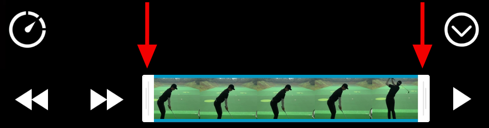
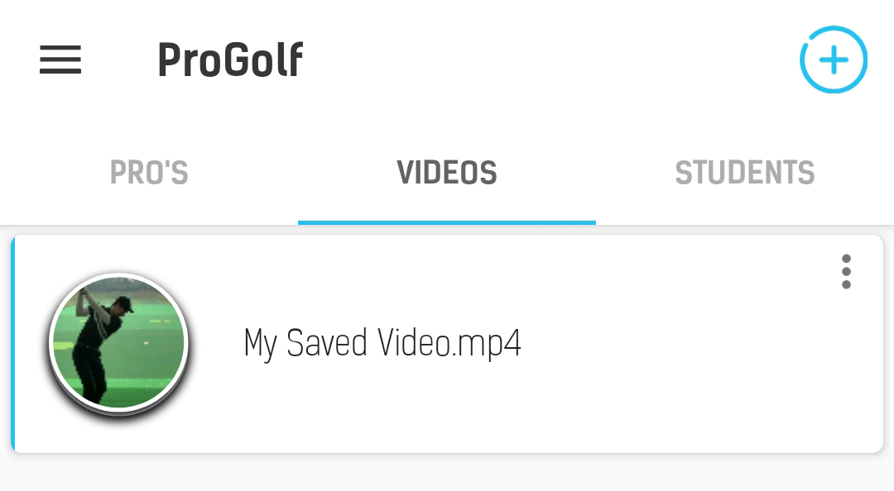

Though videos can directly be edited/played, by selecting it from your device or recording it - It is recomended to import/save your videos to get the best result.
If you import/save a video first, you will get faster and more accurate video frame seeking.
The player will still work perfectly fine when you do not import a video, but it will not be optimized for fast and accurate seeking.
Select a video from your device by pressing the blue plus sign or record a video.
When the video starts playing, set the left trimming point to the start of your swing and the right trimming point to the end of your swing, as shown below:
(See the "Saving Videos" tab.)
After your video has been saved, you will see it on the main page under "VIDEOS".
Your video is now ready to be analized.